Opzet en budget
Demo-plan voor de Amara Mozaïek Set Amethist. Zoekvolumes NL uit Ahrefs (29-10-2026), prijzen −25%. Alle tekstlimieten zijn automatisch gecontroleerd.
| Campagne | Doel | Budget | Biedstrategie |
|---|---|---|---|
| Search · Amethist & edelsteen | Koopintentie op product | € 12/dag | Max. conversies → tROAS 400% |
| Search · Cadeau | Avatar 1 + 6, piek nov-dec | € 10/dag (dec € 20) | Max. conversies → tCPA € 45 |
| Shopping (standaard) | Productzoekers, controle per SKU | € 5/dag | Handmatig CPC € 0,60 → tROAS |
| Performance Max | 4 avatars + BF als assetgroepen | € 13/dag | Max. conversiewaarde, nieuwe klanten-modus |
| Search · Black Friday | 24-30 nov | € 25/dag | Max. conversiewaarde + seizoensaanpassing |
Zoekcampagnes
Search · Amethist & edelsteen (product)
Amethist ketting
Landing: https://amara-sieraden.nl/products/mozaiek-set-amethist#steen
Collier en oorbellen met echte amethist, elke steen met de hand in 925 zilver gezet. -25%. Gratis geschenkdoos, kaartje en poetsdoekje. 60 dagen ruilen, ook na het uitpakken.
Zoekwoorden
| Zoekwoord | Vol./mnd | CPC |
|---|---|---|
[amethist ketting] | 250 | € 0,35 |
[amethist ketting zilver] | 30 | € 0,25 |
"zilveren ketting amethist" | – | – |
"amethist sieraden" | 50 | € 0,25 |
[amethist oorbellen] | 150 | € 0,15 |
"amethist oorbellen zilver" | 40 | € 0,35 |
RSA · 15 koppen (max. 30)
- Amethist Ketting Kopen22/30
- Echte Amethist in 925 Zilver28/30
- Mozaïek Set: Collier+Oorbellen30/30
- Nu 25% Korting14/30
- Elke Steen Anders Geslepen26/30
- Met Echtheidscertificaat24/30
- Gratis Geschenkdoos19/30
- Gratis Verzending17/30
- 60 Dagen Ruilen15/30
- 4,9 Sterren uit 418 Reviews27/30
- Met de Hand in Zilver Gezet27/30
- Nikkelvrij Sterling Zilver26/30
- Morgen in Huis14/30
- Betaal in 3 Termijnen21/30
- Amara Sieraden14/30
4 beschrijvingen (max. 90)
- Collier en oorbellen met echte amethist, elke steen met de hand in 925 zilver gezet. -25%.90/90
- Gratis geschenkdoos, kaartje en poetsdoekje. 60 dagen ruilen, ook na het uitpakken.83/90
- Geen glas of kunststof: natuurlijke amethist met certificaat. Nikkelvrij 925 zilver.84/90
- 4,9 uit 418 reviews. Voor 22:00 besteld, morgen in huis. Betaal in 3 delen zonder rente.88/90
Sieradenset & edelsteen
Landing: https://amara-sieraden.nl/products/mozaiek-set-amethist
De Mozaïek Set: collier en oorbellen met echte amethist in 925 sterling zilver. Nu -25%. Kant-en-klaar in een fluwelen doos met kaartje. Gratis verzending en 60 dagen ruilen.
Zoekwoorden
| Zoekwoord | Vol./mnd | CPC |
|---|---|---|
[sieraden set] | 600 | € 0,30 |
"sieradenset zilver" | 90 | € 0,25 |
[ketting en oorbellen set] | 70 | € 0,30 |
"zilveren sieraden set" | 60 | € 0,20 |
"edelsteen ketting" | 450 | € 0,35 |
"ketting met edelsteen" | 150 | € 0,30 |
"edelsteen sieraden" | 450 | € 0,30 |
"zilveren ketting met steen" | 70 | € 0,25 |
[statement ketting] | 900 | € 0,20 |
RSA · 15 koppen (max. 30)
- Ketting + Oorbellen Set23/30
- Zilveren Sieradenset20/30
- Edelsteen Ketting in Zilver27/30
- Echte Amethist, 25% Korting27/30
- Set Voordeliger dan Los23/30
- Statement Ketting met Amethist30/30
- Gratis Geschenkdoos19/30
- Gratis Verzending17/30
- 60 Dagen Ruilen15/30
- 4,9 Sterren uit 418 Reviews27/30
- Elke Set is Uniek17/30
- 925 Sterling Zilver19/30
- Morgen in Huis14/30
- Ook in Rozenkwarts en Topaas28/30
- Amara Sieraden14/30
4 beschrijvingen (max. 90)
- De Mozaïek Set: collier en oorbellen met echte amethist in 925 sterling zilver. Nu -25%.88/90
- Kant-en-klaar in een fluwelen doos met kaartje. Gratis verzending en 60 dagen ruilen.85/90
- Elke steen los geslepen en met de hand gezet, dus jouw set bestaat maar één keer.81/90
- Ook in rozenkwarts, blauwe topaas, labradoriet en peridot. Betaal in 3 delen.77/90
Geboortesteen februari
Landing: https://amara-sieraden.nl/products/mozaiek-set-amethist#steen
Amethist is de geboortesteen van februari. Collier en oorbellen in 925 zilver, nu -25%. Graveer haar initialen of geboortedatum op het slotplaatje. Gratis geschenkdoos erbij.
Zoekwoorden
| Zoekwoord | Vol./mnd | CPC |
|---|---|---|
[geboortesteen februari] | 900 | € 0,35 |
"geboortesteen februari ketting" | – | – |
"geboortesteen ketting februari" | – | – |
"amethist geboortesteen" | – | – |
RSA · 15 koppen (max. 30)
- Geboortesteen Februari22/30
- Amethist Ketting Februari25/30
- Echte Amethist in 925 Zilver28/30
- Cadeau met een Verhaal22/30
- Nu 25% Korting14/30
- Collier + Oorbellen19/30
- Met Echtheidscertificaat24/30
- Gratis Geschenkdoos19/30
- Gratis Verzending17/30
- 60 Dagen Ruilen15/30
- 4,9 Sterren uit 418 Reviews27/30
- Met Graveerbaar Slotplaatje27/30
- Morgen in Huis14/30
- Elke Steen Anders17/30
- Amara Sieraden14/30
4 beschrijvingen (max. 90)
- Amethist is de geboortesteen van februari. Collier en oorbellen in 925 zilver, nu -25%.87/90
- Graveer haar initialen of geboortedatum op het slotplaatje. Gratis geschenkdoos erbij.86/90
- Natuurlijke amethist met certificaat, elke steen anders geslepen en met de hand gezet.86/90
- Gratis verzending, morgen in huis en 60 dagen ruilen, ook na het uitpakken.75/90
Uitsluitingen (campagne): gratis, goedkoop, betekenis, werking, wat is, ruw, ruwe, geode, druzy, kralen, zelf maken, tattoo, tekening, marktplaats, tweedehands, hema, action, zeeman, kruidvat, lithotherapie, edelsteen water, kopen steen
Search · Cadeau (avatar 1 + 6)
Cadeau voor haar
Landing: https://amara-sieraden.nl/products/mozaiek-set-amethist#cadeau
Geen idee wat je haar moet geven? Een set met echte amethist, kant-en-klaar ingepakt. Jouw tekst met de hand op een kaartje. Past het toch niet? Ze ruilt tot 31 januari.
Zoekwoorden
| Zoekwoord | Vol./mnd | CPC |
|---|---|---|
"kerstcadeau vrouw" | 5500 | € 0,50 |
"cadeau voor vrouw" | 1100 | € 0,10 |
"cadeau voor mijn vrouw" | – | – |
"sieraden cadeau vrouw" | 30 | – |
"cadeau vrouw 50 jaar" | 250 | € 0,25 |
"ketting cadeau vrouw" | – | – |
"cadeau vriendin sieraad" | – | – |
RSA · 15 koppen (max. 30)
- Cadeau Dat Ze Écht Draagt25/30
- Kant-en-Klaar Ingepakt22/30
- Met Kaartje met Jouw Tekst26/30
- Ruilen tot 31 Januari21/30
- Nu 25% Korting14/30
- Echte Amethist in 925 Zilver28/30
- Collier + Oorbellen Set23/30
- Geen Prijs op de Pakbon23/30
- Morgen in Huis14/30
- 4,9 Sterren uit 418 Reviews27/30
- Op Tijd Voor Kerst18/30
- Gravure met Haar Initialen26/30
- Fluwelen Geschenkdoos21/30
- Gratis Verzending17/30
- Amara Sieraden14/30
4 beschrijvingen (max. 90)
- Geen idee wat je haar moet geven? Een set met echte amethist, kant-en-klaar ingepakt.85/90
- Jouw tekst met de hand op een kaartje. Past het toch niet? Ze ruilt tot 31 januari.83/90
- Collier + oorbellen in 925 zilver, fluwelen doos, morgen in huis. Nu 25% korting.81/90
- "Mijn vrouw had hem op tweede kerstdag al om." 4,9 uit 418 reviews. Gratis verzending.86/90
Cadeau voor moeder
Landing: https://amara-sieraden.nl/products/mozaiek-set-amethist#cadeau
Voor mama, die alles al heeft: een set met echte amethist die ze écht draagt. Nu -25%. Haar smaak raden? Lila en zilver passen bij bijna alles. En ruilen kan 60 dagen.
Zoekwoorden
| Zoekwoord | Vol./mnd | CPC |
|---|---|---|
"cadeau moeder" | 2600 | € 0,20 |
"cadeau voor moeder 60 jaar" | 40 | € 0,20 |
"cadeau moeder 65 jaar" | – | – |
"sieraad voor moeder" | – | – |
"kerstcadeau moeder" | – | – |
"cadeau voor mama" | – | – |
RSA · 15 koppen (max. 30)
- Cadeau Voor je Moeder21/30
- Iets Wat Ze Écht Draagt23/30
- Lila en Zilver Past Bij Alles29/30
- Kant-en-Klaar Ingepakt22/30
- Nu 25% Korting14/30
- Echte Amethist in 925 Zilver28/30
- Ruilen Kan Altijd17/30
- Met Handgeschreven Kaartje26/30
- Voor Haar 60e of 65e20/30
- 4,9 Sterren uit 418 Reviews27/30
- Morgen in Huis14/30
- Gratis Geschenkdoos19/30
- Gratis Verzending17/30
- Collier + Oorbellen Set23/30
- Amara Sieraden14/30
4 beschrijvingen (max. 90)
- Voor mama, die alles al heeft: een set met echte amethist die ze écht draagt. Nu -25%.86/90
- Haar smaak raden? Lila en zilver passen bij bijna alles. En ruilen kan 60 dagen.80/90
- In een fluwelen geschenkdoos met jouw tekst op een kaartje. Morgen in huis.75/90
- "Voor de 65e van mijn moeder. Ze draagt hem bij elk etentje." 4,9 uit 418 reviews.82/90
Uitsluitingen (campagne): diy, zelf maken, knutselen, goedkoop, onder 10 euro, onder 20 euro, ervaring, dagje uit, bloemen, bon, cadeaubon, man, vader, kind, baby
Extensies (assets)
Sitelinks
- Als cadeau · Ingepakt, met kaartje · Ruilen tot 31 januari
#cadeau - Echte amethist · Elke steen anders · Met certificaat
#steen - Reviews 4,9/5 · 418 beoordelingen · 97% raadt ons aan
#reviews - Andere stenen · Rozenkwarts, topaas · Labradoriet, peridot
#stenen - Maten en details · 45 cm + verlengketting · Oorbellen 3,2 cm
#details - Black Friday -35% · 27 t/m 30 november · Op = op
/black-friday
Highlights
- Gratis verzending
- 60 dagen ruilen
- Gratis geschenkdoos
- 925 sterling zilver
- Echtheidscertificaat
- Morgen in huis
- Betaal in 3 termijnen
- Handgeschreven kaartje
Structured snippets
- Typen: Sets, Kettingen, Oorbellen, Armbanden, Ringen
- Stijlen: Amethist, Rozenkwarts, Blauwe topaas, Labradoriet, Peridot
Promotie
- Mozaïek Set Amethist -25% · tot 26 nov
- Black Friday -35% · 27-30 nov
Prijs
- Mozaïek Set € 247 · Collier + oorbellen
- Collier € 224 · Alleen de ketting
- Oorbellen € 37 · Alleen de oorbellen
- Duo met armband € 319 · Oorknopjes gratis
Shopping + Merchant Center-feed
Standaard Shopping met prioriteit hoog voor productcontrole, PMax pakt de rest. Productgroepen op custom_label_0 (bestseller/core/instap/hoge-aov/cross-sell).
Feedregels: google_product_category 6463 (Sieradensets) · brand Amara · material 925 sterling zilver/amethist · color paars/zilver · gender female · age_group adult · identifier_exists no (handgemaakt) · gratis verzending · sale_price_effective_date voor Black Friday.
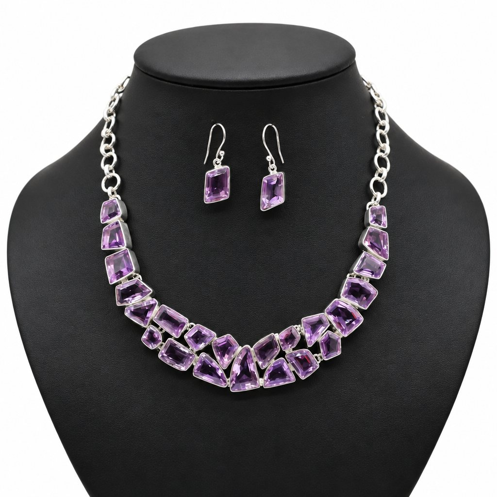
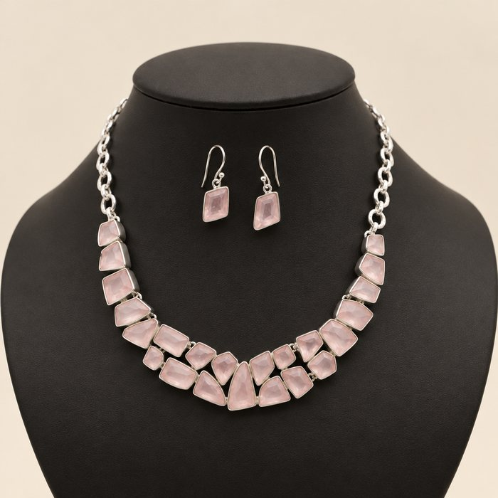
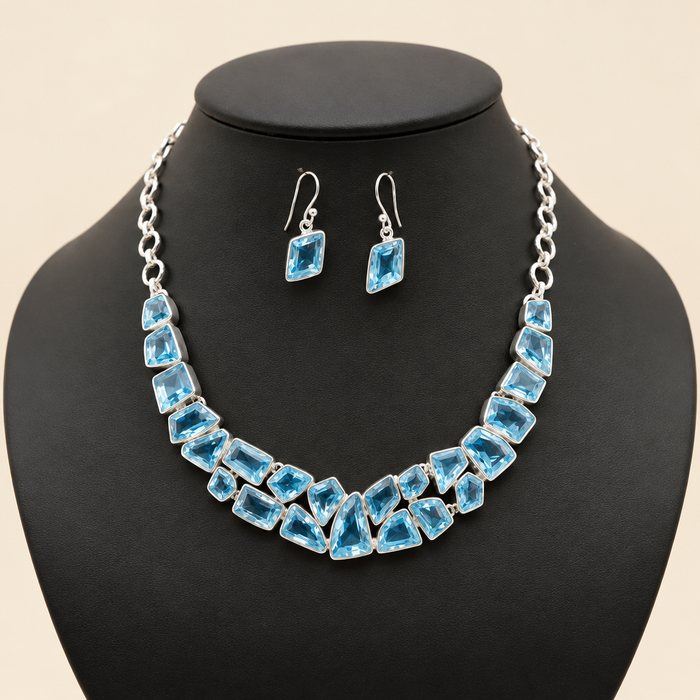
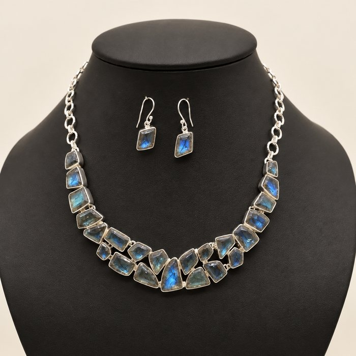
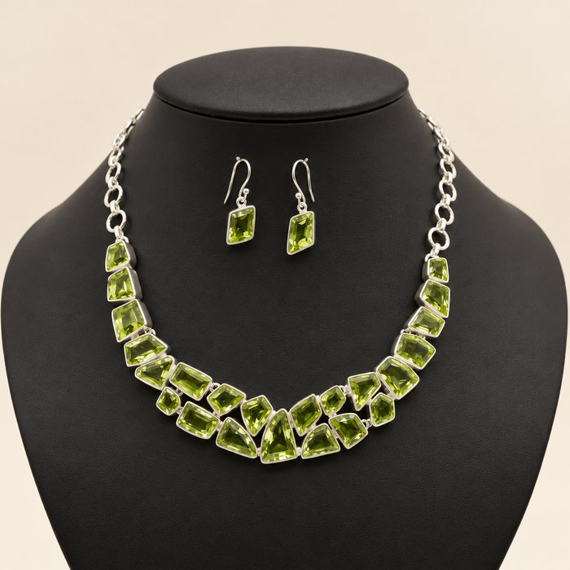
| ID | Titel (max. 150, eerste 70 tellen) | Prijs | Actieprijs | product_type | labels |
|---|---|---|---|---|---|
AM-SET-AME | Amara Mozaïek Set Amethist – Collier + Oorbellen – 925 Sterling Zilver (70) | € 329 | € 247 (BF: € 214) | Sets | bestseller · cadeau |
AM-COL-AME | Amara Mozaïek Collier Amethist – 925 Sterling Zilver – 45 cm (60) | € 299 | € 224 (BF: € 194) | Kettingen | core · cadeau |
AM-OOR-AME | Amara Mozaïek Oorbellen Amethist – 925 Sterling Zilver – 3,2 cm (63) | € 49 | € 37 (BF: € 32) | Oorbellen | instap · zelf |
AM-DUO-AME | Amara Mozaïek Duo Amethist – Collier, Oorbellen + Armband – 925 Zilver (70) | € 448 | € 319 (BF: € 289) | Sets | hoge-aov · cadeau |
AM-SET-ROZ | Amara Mozaïek Set Rozenkwarts – Collier + Oorbellen – 925 Zilver (64) | € 299 | € 224 | Sets | cross-sell · cadeau |
AM-SET-TOP | Amara Mozaïek Set Blauwe Topaas – Collier + Oorbellen – 925 Zilver (66) | € 349 | € 262 | Sets | cross-sell · cadeau |
AM-SET-LAB | Amara Mozaïek Set Labradoriet – Collier + Oorbellen – 925 Zilver (64) | € 329 | € 247 | Sets | cross-sell · zelf |
AM-SET-PER | Amara Mozaïek Set Peridot – Collier + Oorbellen – 925 Zilver (60) | € 319 | € 239 | Sets | cross-sell · zelf |
Performance Max · assetgroep per avatar
Assetgroep: Cadeau voor haar
Zoekthema's: kerstcadeau vrouw, cadeau voor mijn vrouw, sieraad cadeau · Signaal: mannen 35-65, in-market "Sieraden", "Cadeaus", eigen data: kopers + mandje
Koppen (max. 30)
- Cadeau Dat Ze Écht Draagt25/30
- Kant-en-Klaar Ingepakt22/30
- Ruilen tot 31 Januari21/30
- Echte Amethist, -25%20/30
- Met Jouw Kaartje16/30
Lange koppen (max. 90)
- Geen idee wat je haar moet geven? Echte amethist, kant-en-klaar ingepakt met kaartje84/90
- De Amara Mozaïek Set: collier en oorbellen in 925 zilver, nu 25% korting72/90
Beschrijvingen (1× max. 60, rest max. 90)
- Ingepakt in een fluwelen doos.30/60
- Collier + oorbellen met echte amethist in 925 zilver. Past het niet? Ruilen tot 31 jan.87/90
Beelden (1,91:1 + 1:1, plus 4:5 uit de Meta-set) · video: Ad 1 · Ad 2 (scroll-stopper + loop)
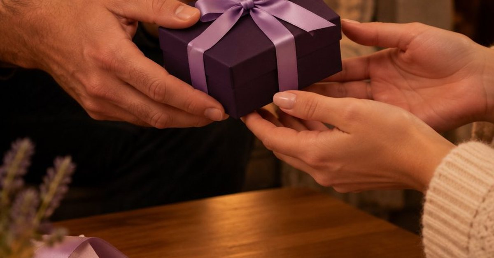
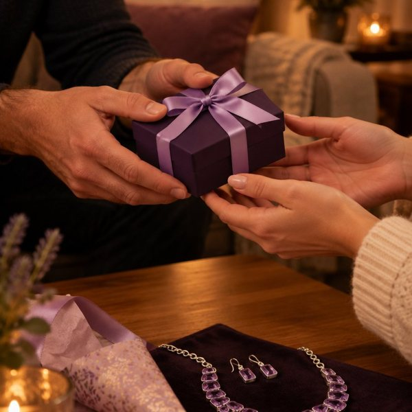
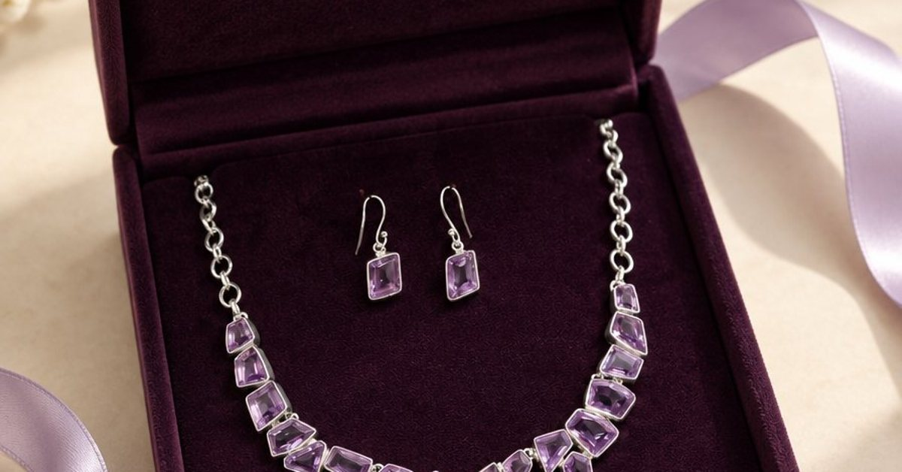
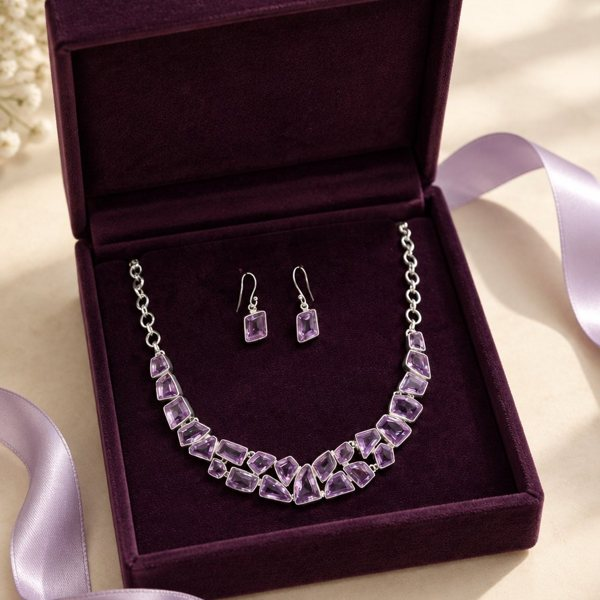
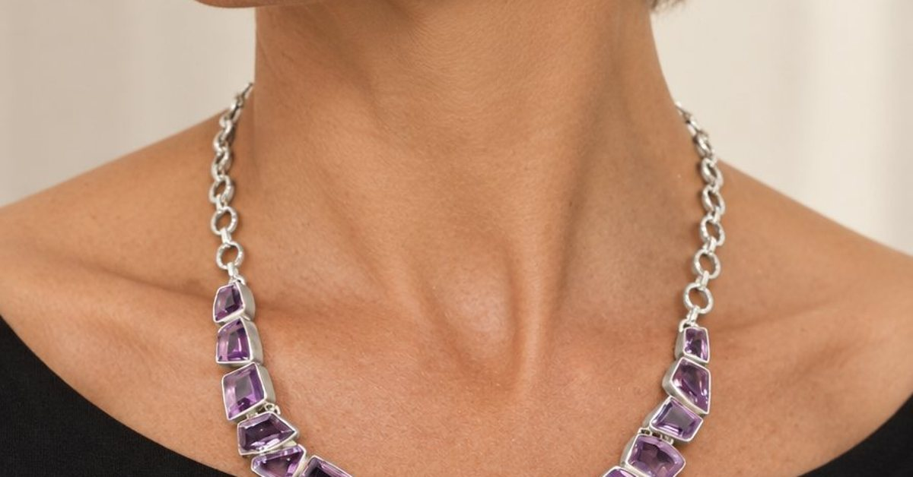
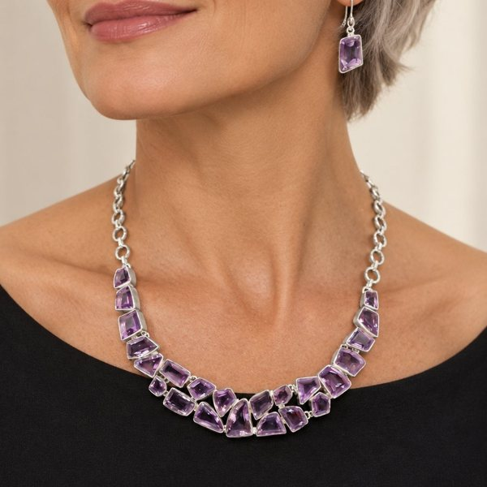
Assetgroep: Zichzelf trakteren
Zoekthema's: zilveren ketting dames, statement ketting, edelsteen sieraden · Signaal: vrouwen 40-62, affiniteit mode en luxe, website-bezoekers
Koppen (max. 30)
- Voor Jezelf, Omdat Het Mag26/30
- € 2 per Keer Dragen19/30
- Bij Zwart, Grijs en Jeans25/30
- Echte Amethist, -25%20/30
- 925 Sterling Zilver19/30
Lange koppen (max. 90)
- Je hebt jaren voor iedereen gezorgd. Deze set met echte amethist is voor jou76/90
- Eén set, honderd keer dragen: collier en oorbellen in 925 zilver, nu -25%73/90
Beschrijvingen (1× max. 60, rest max. 90)
- Echte amethist, nikkelvrij zilver.34/60
- Een set die je niet in een la legt. Elk jaar poetsen wij hem gratis voor je.76/90
Beelden (1,91:1 + 1:1, plus 4:5 uit de Meta-set) · video: Ad 6 (spiegel-loop)
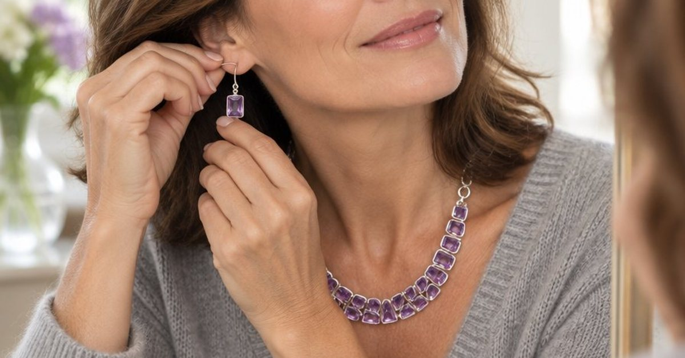
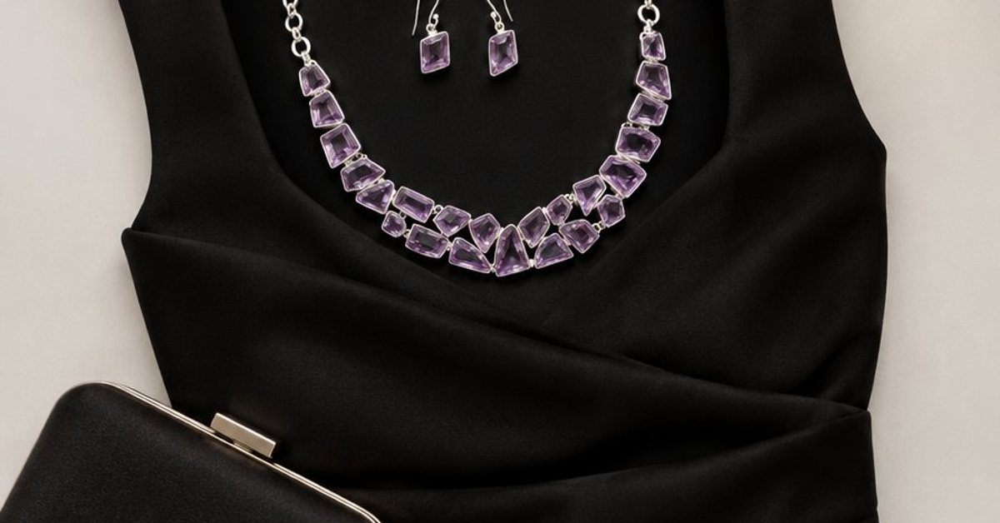
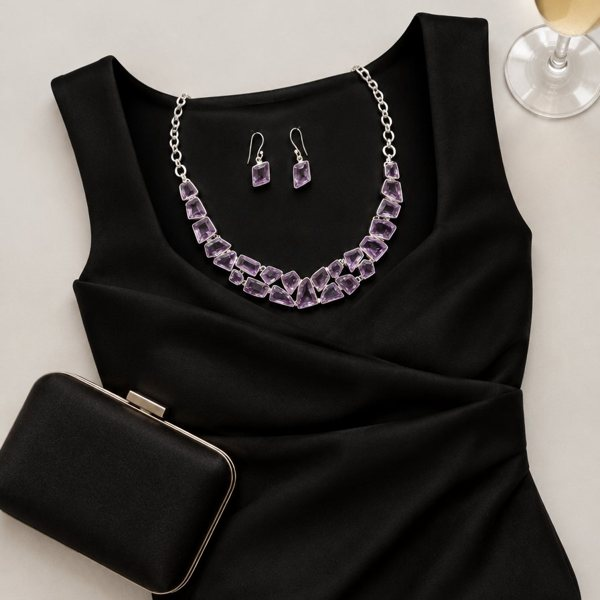
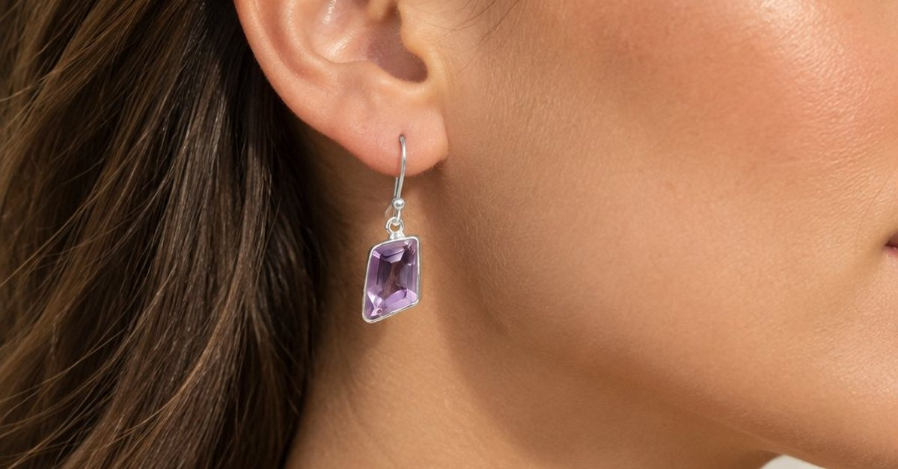
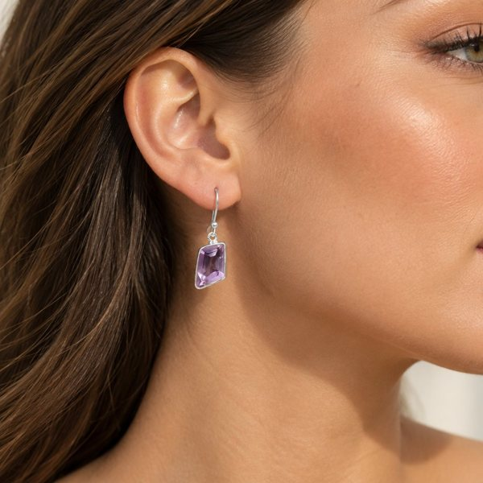
Assetgroep: Liefhebber van stenen
Zoekthema's: amethist ketting, amethist sieraden, geboortesteen februari, edelsteen ketting · Signaal: interesses edelstenen, mineralen, yoga
Koppen (max. 30)
- Echte Amethist Ketting22/30
- Geen Twee Stenen Gelijk23/30
- Met Echtheidscertificaat24/30
- Geboortesteen Februari22/30
- Nu 25% Korting14/30
Lange koppen (max. 90)
- Echte amethist, elke steen los geslepen en met de hand in 925 zilver gezet74/90
- Amethist, de geboortesteen van februari. Collier en oorbellen met certificaat77/90
Beschrijvingen (1× max. 60, rest max. 90)
- Natuurlijke amethist met certificaat.37/60
- Geen glas of kunststof: elke steen een eigen vorm, gezet in massief sterling zilver.84/90
Beelden (1,91:1 + 1:1, plus 4:5 uit de Meta-set) · video: Ad 10 (linnen-loop)
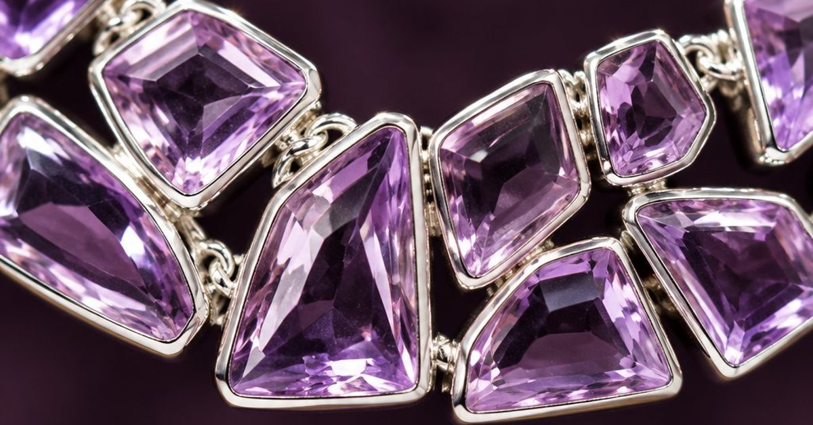
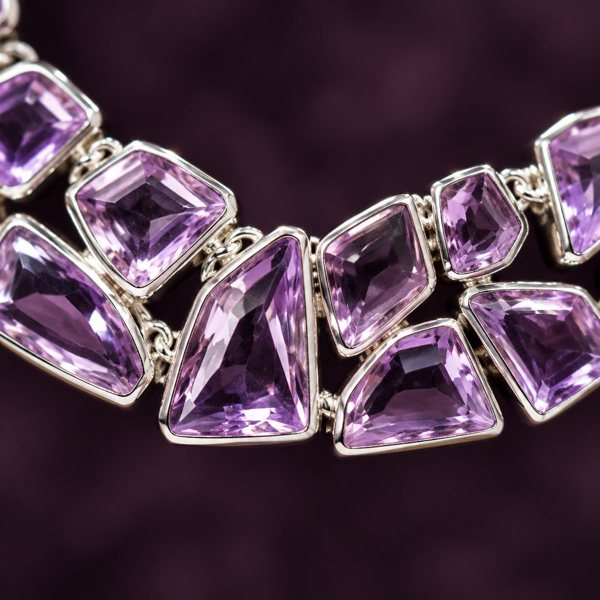
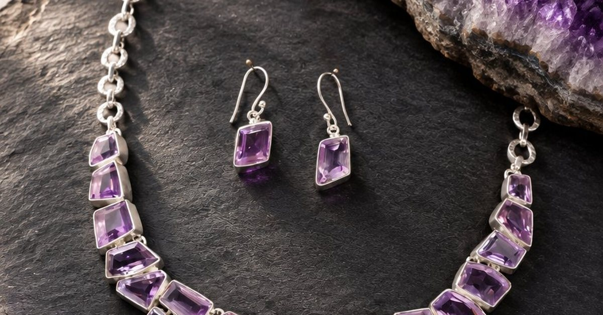
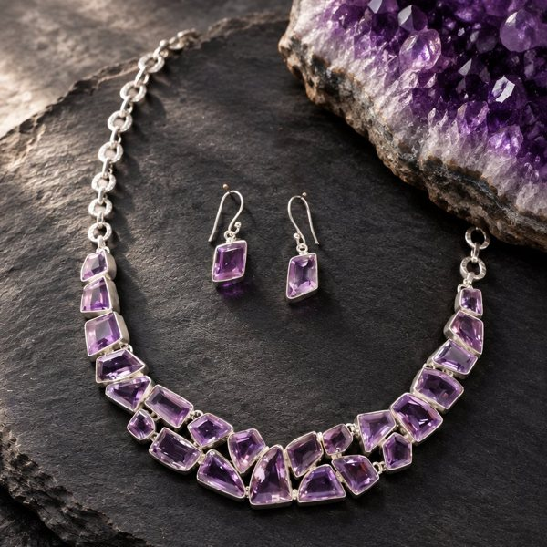
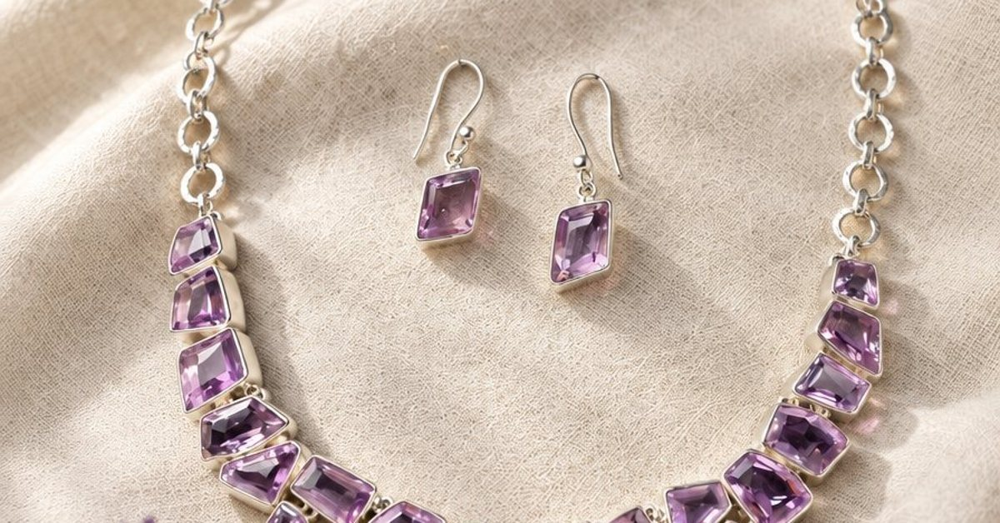
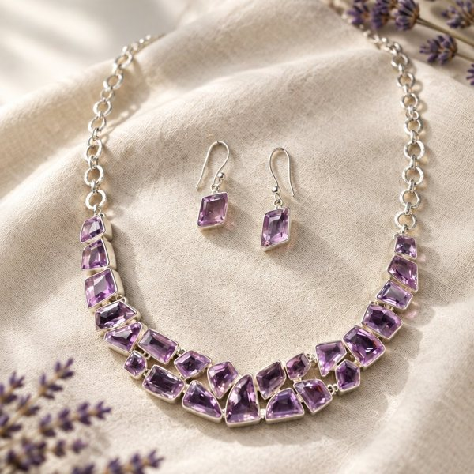
Assetgroep: Cadeau voor moeder
Zoekthema's: cadeau moeder, cadeau moeder 60 jaar, kerstcadeau moeder · Signaal: vrouwen 25-45, life event: ouder jarig
Koppen (max. 30)
- Cadeau Voor je Moeder21/30
- Iets Wat Ze Écht Draagt23/30
- Lila en Zilver Past Altijd26/30
- Kant-en-Klaar Ingepakt22/30
- Nu 25% Korting14/30
Lange koppen (max. 90)
- Voor mama, die alles al heeft: een set met echte amethist die ze écht draagt76/90
- Haar smaak raden? Zacht lila en zilver passen bij bijna alles wat ze draagt75/90
Beschrijvingen (1× max. 60, rest max. 90)
- Ingepakt, met jouw kaartje erbij.33/60
- Collier en oorbellen met echte amethist in een fluwelen doos. Ruilen kan 60 dagen.82/90
Beelden (1,91:1 + 1:1, plus 4:5 uit de Meta-set) · video: Ad 15 (doos-loop)
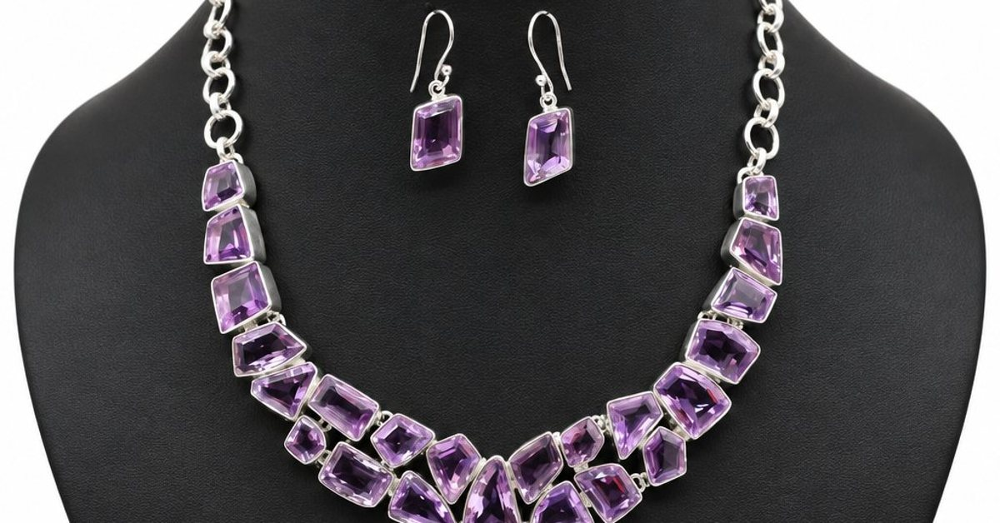
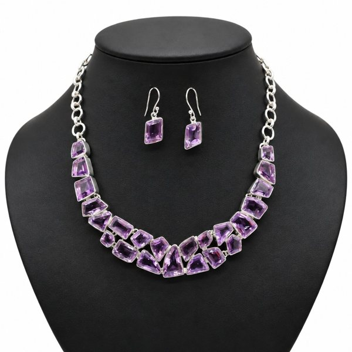
Assetgroep: Black Friday (27-30 nov)
Zoekthema's: black friday sieraden, sieraden aanbieding · Signaal: alle warme doelgroepen + kopers sieraden · URL: /black-friday
Koppen (max. 30)
- Black Friday: -35%18/30
- Amethist Set Nu -35%20/30
- Alleen t/m 30 November22/30
- Geschenkdoos Gratis19/30
- Nog 38 Sets11/30
Lange koppen (max. 90)
- Black Friday: de Amara Mozaïek Set Amethist met 35% korting, t/m maandag 30 nov79/90
- Echte amethist in 925 zilver met 35% korting. Op = op, elke set is uniek72/90
Beschrijvingen (1× max. 60, rest max. 90)
- Alleen t/m maandag 30 november.31/60
- Collier + oorbellen met echte amethist, nu -35% en de geschenkdoos gratis erbij.80/90
Beelden (1,91:1 + 1:1, plus 4:5 uit de Meta-set) · video: Ad 21 (BF scroll-stopper) · Ad 24
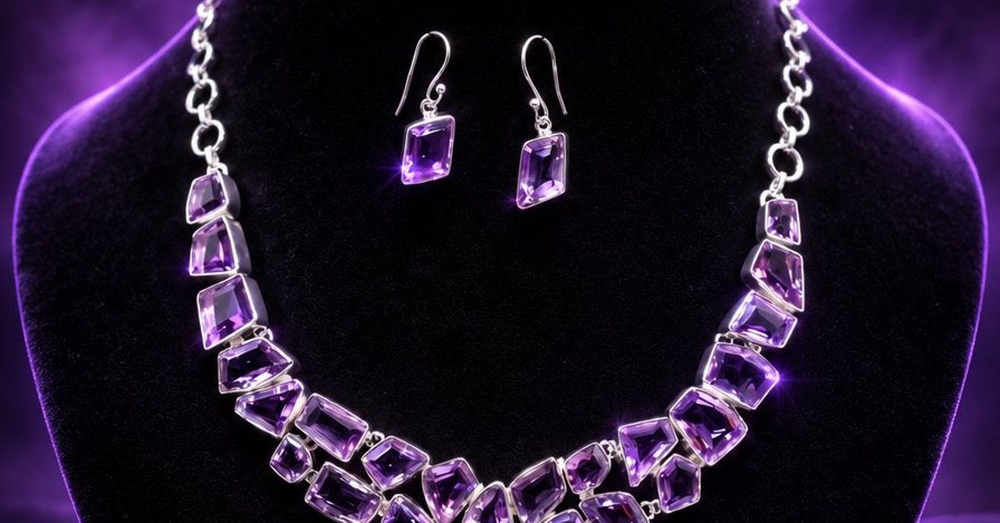
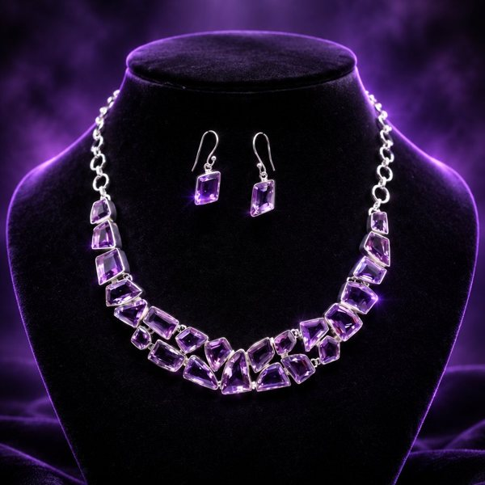
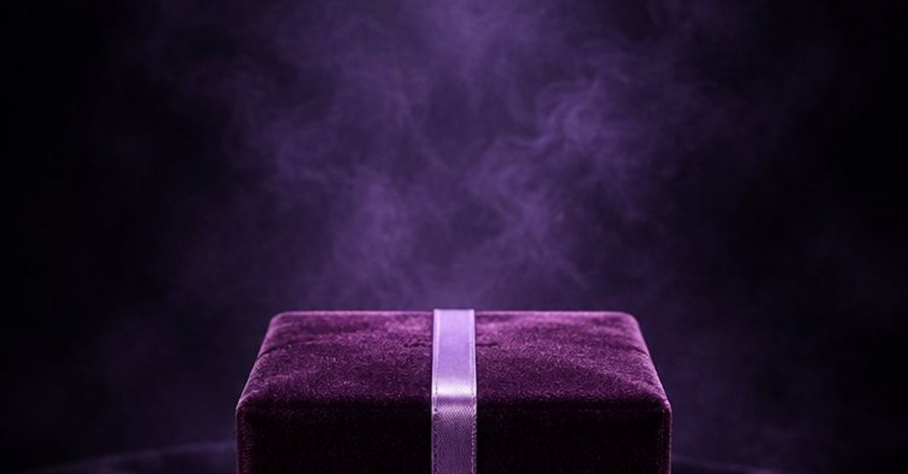
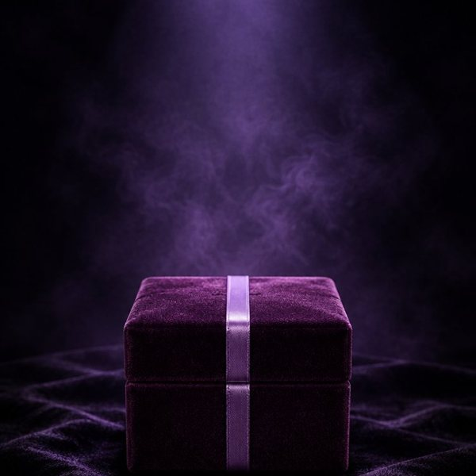
Black Friday
Search · Black Friday (27-30 nov)
Black Friday sieraden
Landing: https://amara-sieraden.nl/black-friday#koop
Black Friday: de Mozaïek Set Amethist met 35% korting. Alleen t/m maandag 30 november. Echte amethist in 925 sterling zilver, geschenkdoos gratis. Nog 38 sets in deze actie.
Zoekwoorden
| Zoekwoord | Vol./mnd | CPC |
|---|---|---|
"black friday sieraden" | 150 | € 0,70 |
"sieraden black friday" | 150 | – |
"black friday ketting" | – | – |
"black friday amethist" | – | – |
"cyber monday sieraden" | – | – |
RSA · 15 koppen (max. 30)
- Black Friday: Sieraden -35%27/30
- Amethist Set Nu -35%20/30
- Alleen t/m Maandag 30 Nov25/30
- Nog 38 Sets in de Actie23/30
- Geschenkdoos Gratis19/30
- Echte Amethist in 925 Zilver28/30
- Collier + Oorbellen19/30
- Op = Op, Elke Set Uniek23/30
- Gratis Verzending17/30
- 60 Dagen Ruilen15/30
- 4,9 Sterren uit 418 Reviews27/30
- Morgen in Huis14/30
- Cyber Monday Deal17/30
- Op Tijd Voor Sinterklaas24/30
- Amara Sieraden14/30
4 beschrijvingen (max. 90)
- Black Friday: de Mozaïek Set Amethist met 35% korting. Alleen t/m maandag 30 november.86/90
- Echte amethist in 925 sterling zilver, geschenkdoos gratis. Nog 38 sets in deze actie.86/90
- Nu kopen voor kerst: 60 dagen ruilen, decembercadeaus zelfs tot 31 januari.75/90
- Gratis verzending, morgen in huis en betalen in 3 delen zonder rente.69/90
Uitsluitingen (campagne): gratis, goedkoop, ervaring
- 24-26 nov: teaser-PMax-assets op "Black Friday komt eraan", e-mailaanmelders in klantlijst.
- 27-30 nov: BF-zoekcampagne aan, PMax-assetgroep BF aan, overige assetgroepen −50% (budget naar BF), seizoensaanpassing +40% conversieratio.
- Feed:
sale_price€ 214 metsale_price_effective_date2026-11-27T00:00/2026-11-30T23:59, promotie in Merchant Center "Black Friday −35%". - 1 dec: BF uit, cadeau-campagne naar € 20/dag (Sinterklaas + kerst).
Meten
- Conversie = aankoop met waarde (Shopify Google & YouTube-app of GTM + enhanced conversions).
- Micro: add_to_cart, begin_checkout als secundair.
- Klantlijst uploaden (kopers) voor nieuwe-klanten-doel in PMax.
- Week 1-2: zoektermen dagelijks, uitsluitingen aanvullen; week 3: koppen met lage prestaties vervangen.